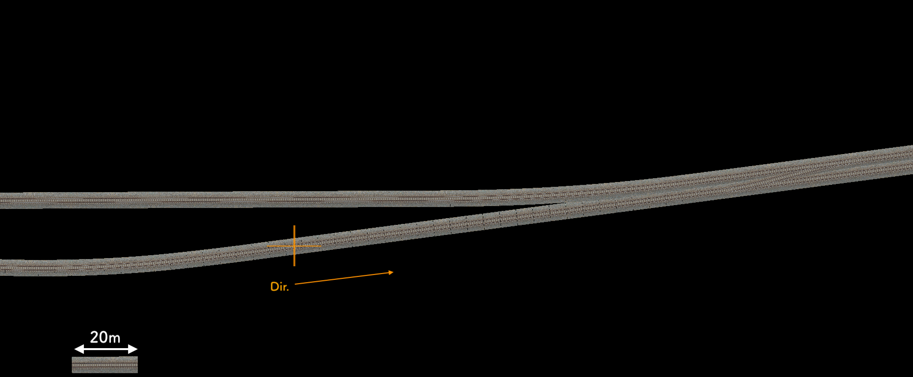
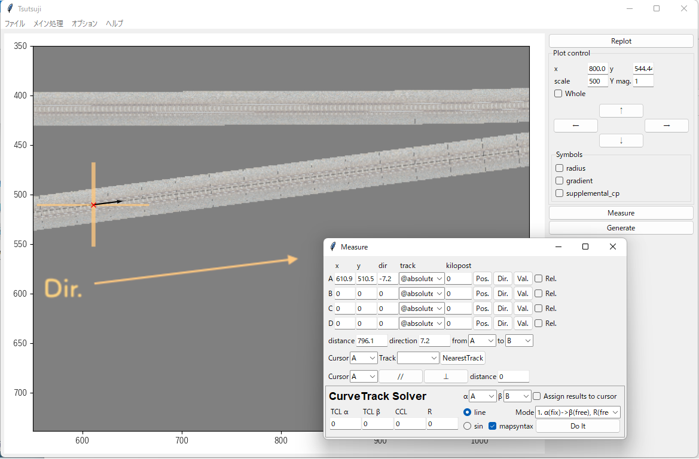
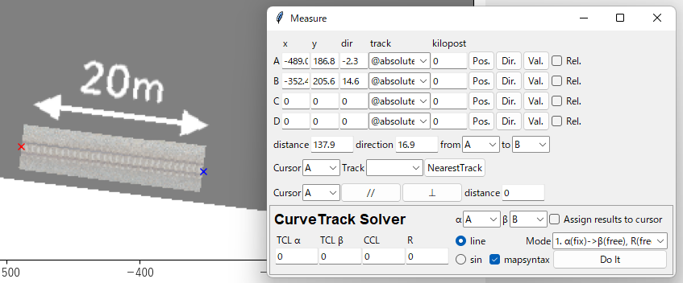
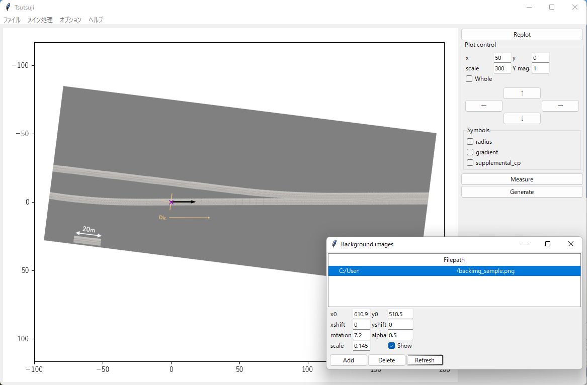

背景画像¶
はじめに¶
このセクションでは、以下の画像をプロットウィンドウの背景(backimg)に表示し、表示倍率と回転角度を調整する手順を説明します。 この機能は、航空写真や配線図を基にして軌道データを調整することを意図しています。
{kind=link}
画像の読み込み¶
オプションメニューからBackimg... を実行して、Background imagesウィンドウ(下記画像)を開きます。 Addボタンを押して表示したい画像ファイルを選択すると、その画像がプロットウィンドウに表示されます。

画像ファイルの形式は、少なくともpng, jpg, bmpに対応しています。 matplotlibが扱えるフォーマットならば、これ以外の形式も読み込めるはずです。
Note
デフォルト設定では、alpha(透明度)は0.5に設定されています。 また、画像の表示／非表示はShowチェックボックスで選択できます。 これらの設定を変更した場合は、Refreshをクリックすると反映されます。
基準座標の測定¶
読み込んだ画像について、十字マーク(オレンジ色)を座標原点として、軌道の方向をx軸正の向きに合わせるため、該当部分の画像上での座標と方角を測定します。
メインウィンドウのMeasureボタンを押して、Measureウィンドウを開きます。
カーソルAのPos. を実行して、出てきたx印カーソルを十字マークの中心に合わせてクリックします。 続いて、Dir. を実行して、方角カーソルを軌道の方向に合わせてクリックします。 これで、十字マーク周りの測定結果がMeasureウィンドウのx, y, dir.フィールドに表示されます。
{kind=link}
測定結果を背景画像に反映させます。 Background imagesウィンドウを開いて、Filepathリストから先ほど読み込んだファイルを選択し、各パラメータを次の表のように設定してRefreshをクリックします。
パラメータ |
設定値 |
備考 |
|---|---|---|
x0 |
610.9 |
測定したxと同じ |
y0 |
510.5 |
｀｀ yと同じ |
rotation |
7.2 |
測定したdirの逆符号 |
{kind=link}
上図のように、十字マークの位置が座標原点に移動し、軌道の向きとx軸の方向が一致します。
Note
ここでは、デフォルト設定では 画像の1pixel = プロット上の1m として扱われることを利用して、measure機能で測った距離をそのままx0, y0に設定しています。 次のセクションで説明するscaleが1以外の値になっている場合、この手順は利用できないのでご注意ください。
スケールの調整¶
背景画像を読み込んだ時点では、画像上の1pixel = プロットウィンドウ上の1m として扱われます。 軌道データの調整に用いるためには、画像上の1m = プロットウィンドウ上の1m となるように画像の表示スケールを調整しなければなりません。
このチュートリアルで用いているサンプル画像では、スケールバーとして使えるように左下に20m分の線路を配置してあります。 この線路の長さをMeasure機能で測定して、pixel数と距離の関係を求めます。
{kind=link}
カーソルA, Bを20m線路の両端にセットすると、両カーソル間の距離は137.9pixelとわかります。 この結果から、画像上での1pixelは 20m / 137.9px = 0.145 m/pixel と求められます。
{kind=link}
得られた値(0.145)をBackground imagesウィンドウのscaleフィールドに入力して、Refreshを実行することで、上図の通り 画像上の1m = プロットウィンドウ上の1m にスケールが調整された背景画像が得られます。
Note
スケール調整を行いやすくするため、背景画像に用いる画像データにはスケールバーを写し込んでおくか、前もって1mが何pxに相当するか調べておくことをお勧めします。